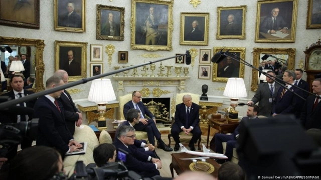

Who is afraid of the big bad wolf?

Blog post, 06/03/2026, by Sven Franck (en français , in Deutsch) -
TL;DR – This week, Germany chancellor Friedrich Merz paid a visit to the US President. Before, he condemned the Iranian attacks on neighboring countries with Keir Starmer and Emmanuel Macron without putting a question mark behind the US and Israel's justification for setting fire to the Middle East. He also sided with Donald Trump to call out Spain's Prime Minister Pedro Sanchez as the only European leader to take a stand. He since backtracked, but I the don't see a real strategy here aside from Germany maybe wanting to become the 51st US State.
Are car sales worth the AfD?
What could Friedrich Merz have said? Since immigration is such a threat to our European culture according to the US National Security Strategy, he could have asked the US if they will this time take in the refugees seeking shelter from the conflict. Europe is already coping with the fallout from Syria, Afghanistan, and not to forget Ukraine, where the Donald also isn't earning his Fifa World Peace price. It's easy to start yet another war when others have to deal with the aftermath.
But this would require looking beyond the German car industry watery's eyes at the US embracing oil and extending the lifeline of combustion engines. If one played a little 4D chess, one would also realize that another wave of refugees might finally flush the AfD into office and the Conservatives down the drain. I guess one must have the confidence of Friedrich Merz to maintain the illegal German border controls as a serious line of defense.
Where is our European leadership? And that united Europe?
In the meantime, heads of state realized the faux-pas and expressed their support to Pedro Sanchez - under threat to join Thierry Breton to receive tailor-made sanctions and Spain a new round of tariffs. They could flag to Donald Trump that crude can't replace olive oil but then, most members states don't produce olives which brings me to the gist of this post: if Friedrich Merz and other national leaders are out of their comfort zone, why don't they allow real European leadership?
This means taking a step back. Germany not controlling German borders but Europe controlling external borders. Spanish olives having the same importance as German cars and the Commission having a robust mandate to defend our joint economic interests. And it would mean having a foreign policy based on a European Security Strategy and mechanisms to react quickly and jointly.
Why should heads of state do so? Citizens are ready to unite. In the same way as the extreme-right is dictating the agenda with regards to immigration, the federalists should dictate it for integration. If the choice is between European leadership or national leadership risking our liberal democracy for their respective industries, for me, this choice is clear. We need to #jumpstartEU
What do you think, besides Pedro Sanchez and Thierry Breton, who would be your "European leader" and why?